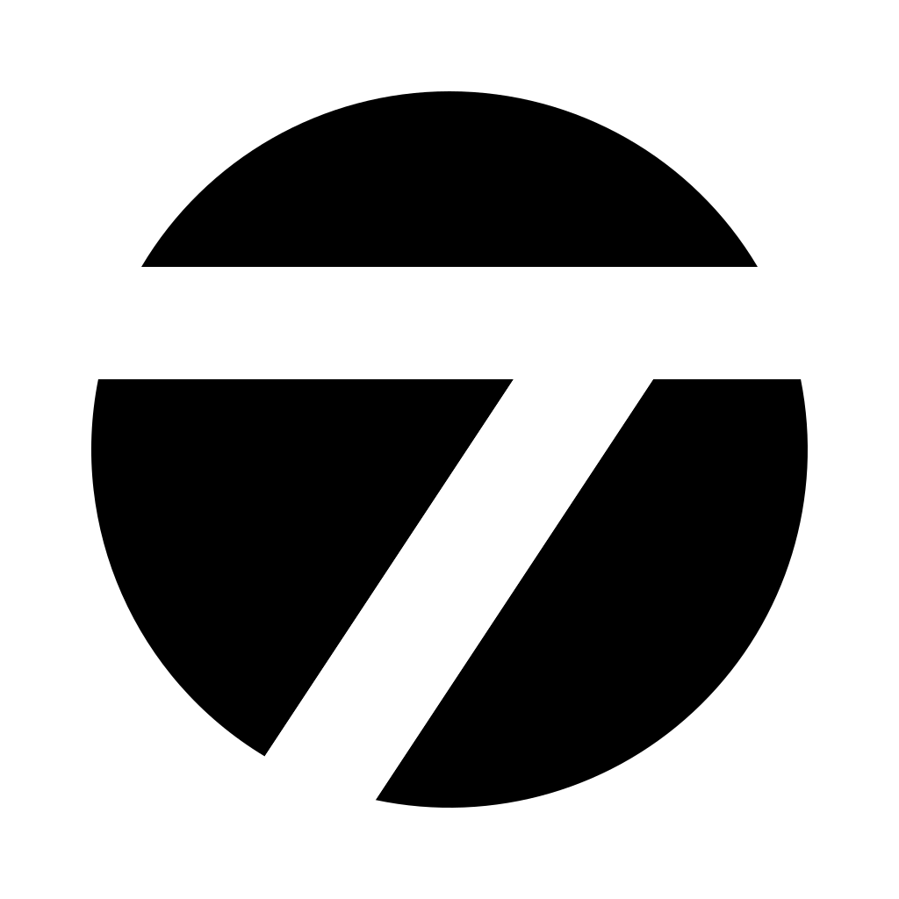
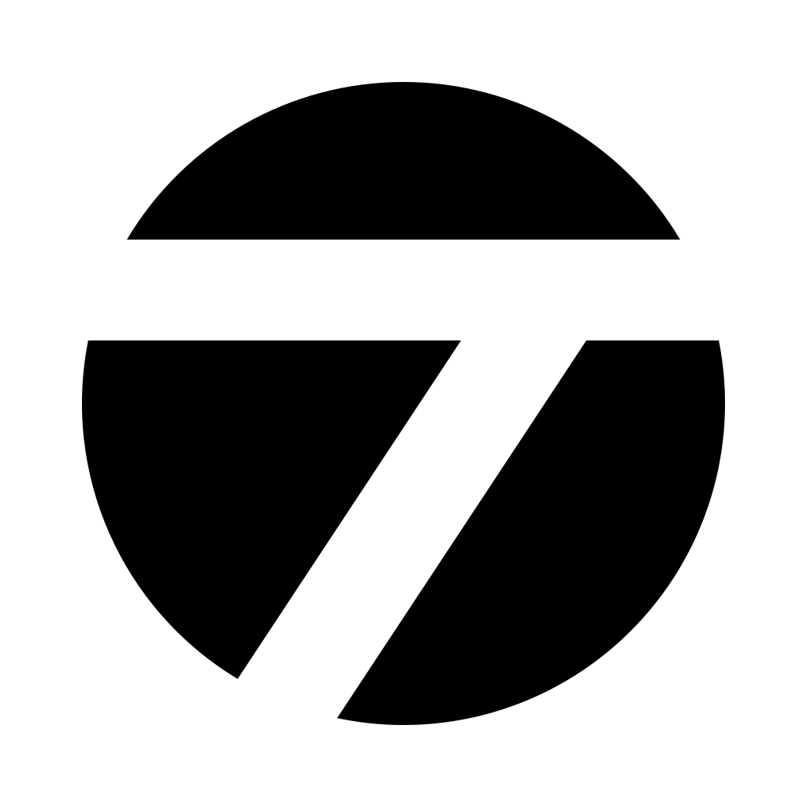
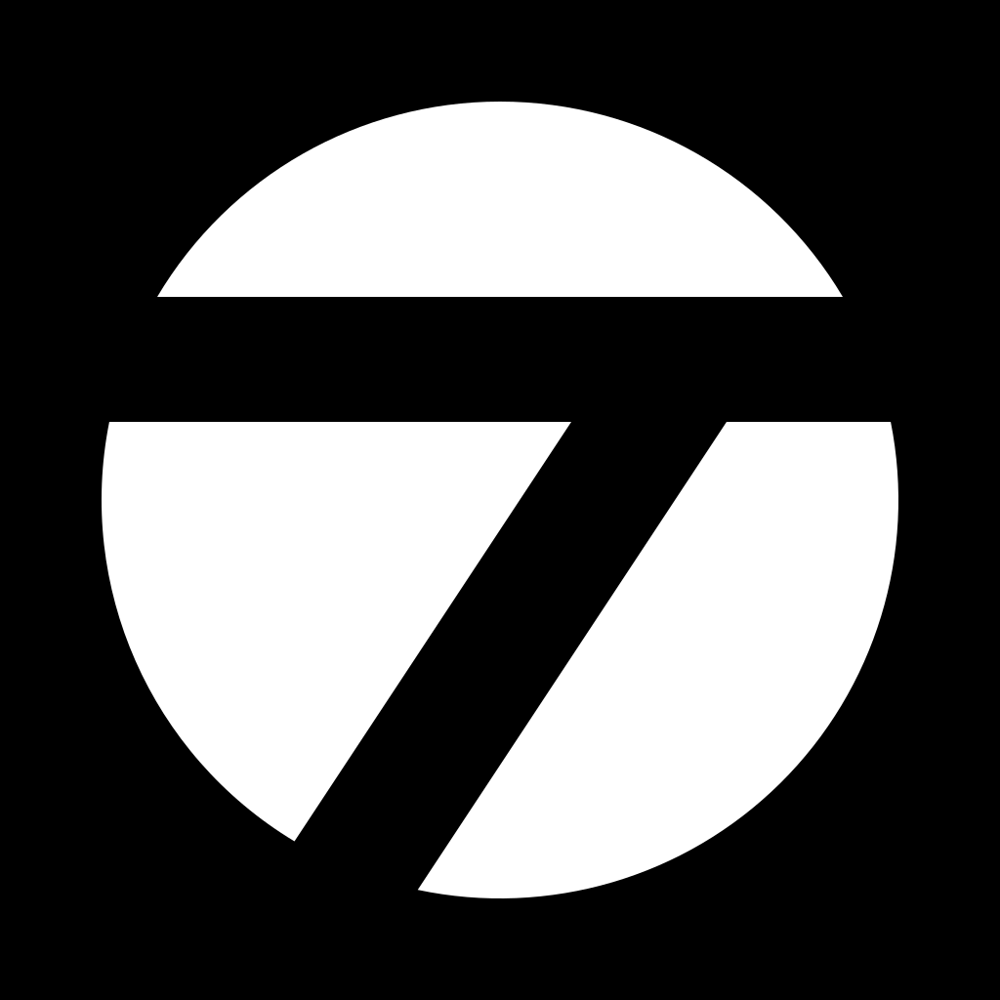
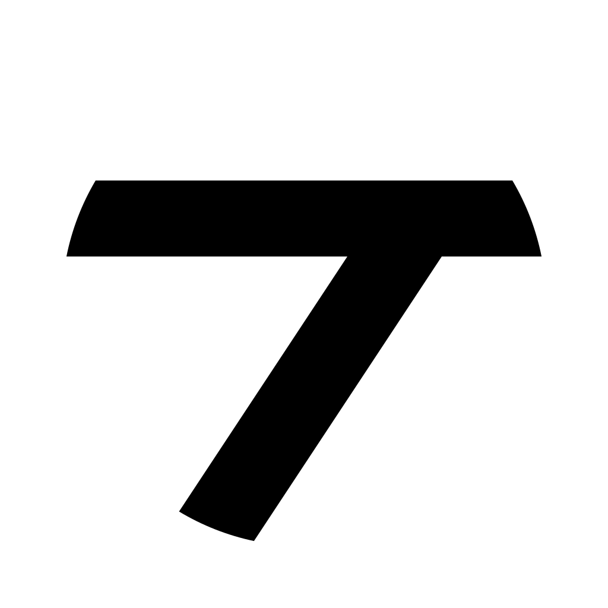
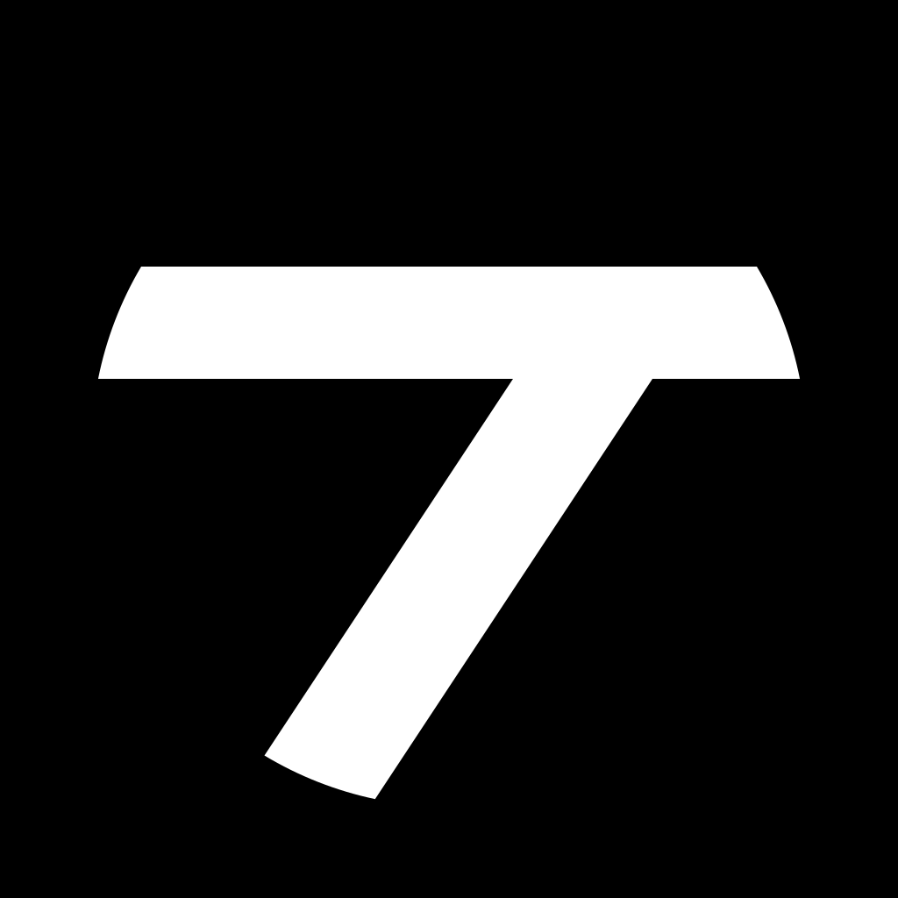
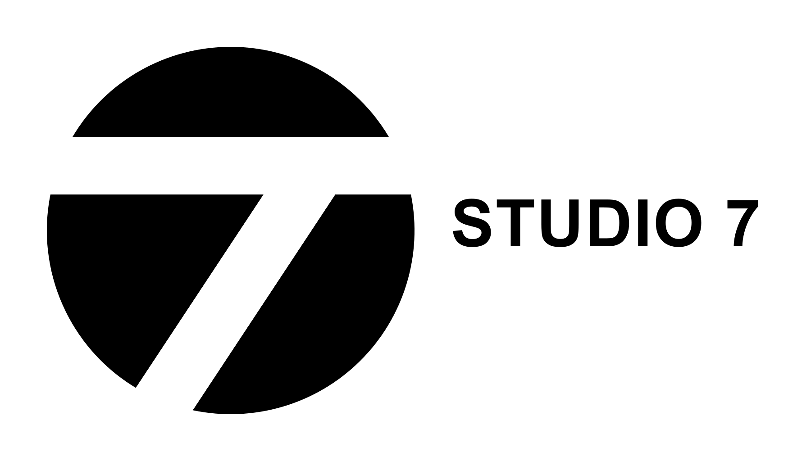

C / SPLIT — CURRENT IDENTITY
SEVEN.
IN MOTION.
一个圆，一道切分。
从品牌符号，到无限叙事。
SEVEN IS MORE THAN A NUMBER.
THE IDENTITY COLLECTION
同一符号，
不同表达。
18 款全部展开。选择适合背景的版本，
直接下载 SVG 或高清 PNG。
独立 t 形即原标志的白色部分；
深浅底板仅供预览，实际背景以版本名称为准。
01 / SVG
TRANSPARENT 完整正形 · 黑圆白 t · 透明背景
1024 × 102402 / SVGTRANSPARENT
完整反形 · 白圆黑 t · 透明背景
1024 × 102403 / SVGSOLID BACKGROUND
完整正形 · 白底
1024 × 102404 / SVGSOLID BACKGROUND
完整反形 · 黑底
1024 × 102405 / SVGTRANSPARENT
黑色三分块 · t 镂空
1024 × 102406 / SVG TRANSPARENT
TRANSPARENT 白色三分块 · t 镂空
1024 × 102407 / SVG
SOLID BACKGROUND 黑色三分块 · 白底
1024 × 102408 / SVG
SOLID BACKGROUND 白色三分块 · 黑底
1024 × 102409 / SVGTRANSPARENT
单独 t 形 · 黑色透明底
1024 × 102410 / SVG
TRANSPARENT 单独 t 形 · 白色透明底
1024 × 102411 / SVG
SOLID BACKGROUND 单独 t 形 · 白底黑形
1024 × 102412 / SVG
SOLID BACKGROUND 单独 t 形 · 黑底白形
1024 × 102413 / SVGTRANSPARENT
三分块轮廓 · 黑线透明底
1024 × 102414 / SVG
TRANSPARENT 三分块轮廓 · 白线透明底
1024 × 102415 / SVGTRANSPARENT
单独 t 轮廓 · 黑线透明底
1024 × 102416 / SVG
TRANSPARENT 单独 t 轮廓 · 白线透明底
1024 × 102417 / SVG
TRANSPARENT 横向字标组合 · 黑白透明底
1800 × 102418 / SVG
TRANSPARENT 横向字标组合 · 白黑透明底
1800 × 1024